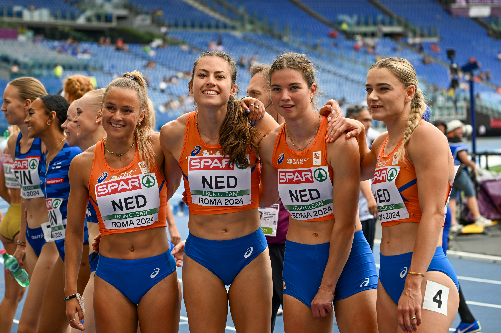

O evento transforma Birmingham, na Inglaterra, em um dos principais centros do esporte mundial durante as provas. O Alexander Stadium concentra a maior parte da programação, enquanto as provas de rua levam a competição para a região central da cidade no fim de semana.
Embora o Brasil não tenha representantes por se tratar do campeonato continental organizado pela European Athletics, o nível técnico coloca o torneio no radar de qualquer fã de atletismo. Campeões olímpicos, campeões mundiais, recordistas e alguns dos principais atletas da temporada europeia estão inscritos.
A edição britânica também tem um diferencial importante: além das provas tradicionais, Birmingham recebe novos formatos de marcha atlética e coloca o revezamento misto 4x100 metros no programa de um grande campeonato pela primeira vez.
Para quem acompanha no Brasil, existe ainda transmissão confirmada: a European Athletics inclui o BandSports entre os detentores dos direitos de exibição do campeonato no país.
O programa do estádio está dividido em 13 sessões, sendo seis matinais e sete noturnas. Há finais desde o primeiro dia até a sessão de encerramento no domingo.
Um campeonato com mais de 90 anos de história
O evento é uma das competições mais tradicionais da modalidade. A primeira edição foi realizada em Turim, na Itália, em 1934, e a própria European Athletics o classifica como o segundo campeonato internacional de atletismo mais antigo entre os grandes eventos da modalidade.
A presença feminina começou a fazer parte dessa história ainda nos primeiros anos. Em 1938, enquanto as provas masculinas foram realizadas em Paris, as mulheres disputaram seu campeonato em Viena. Entre as atletas daquela época estava a lendária holandesa Fanny Blankers-Koen, que posteriormente se transformaria em uma das maiores figuras da história do atletismo e conquistaria a dobradinha dos 100 e 200 metros no Europeu de 1950, em Bruxelas.
Durante grande parte de sua história, o Europeu foi realizado em ciclos de quatro anos. A partir de 2010, porém, passou a ser organizado a cada dois anos, aumentando sua importância no calendário internacional e oferecendo um grande campeonato continental também em temporadas sem Jogos Olímpicos ou Mundial ao ar livre. A exceção recente ocorreu em 2020: a edição prevista para Paris foi cancelada em consequência da pandemia de Covid-19.
A competição atravessou diferentes eras do atletismo e ajudou a construir a trajetória de alguns dos maiores atletas de todos os tempos. Por suas pistas e setores de campo passaram campeões olímpicos, recordistas mundiais e nomes que marcaram gerações.
Algumas lendas que marcaram o Campeonato Europeu:
- Emil Zátopek, Tchecoslováquia — um dos maiores fundistas da história. Em Bruxelas 1950, venceu os 5.000 e os 10.000 metros, uma dobradinha que se tornou referência no campeonato.
- Fanny Blankers-Koen, Países Baixos — ícone do atletismo feminino e uma das grandes esportistas do século XX. Conquistou os 100 e 200 metros no Europeu de 1950.
- Sebastian Coe, Grã-Bretanha — bicampeão olímpico dos 1.500 metros e um dos grandes meio-fundistas da história. No Europeu de Stuttgart, em 1986, conquistou um importante título dos 800 metros.
- Sergey Bubka, União Soviética/Ucrânia — revolucionou o salto com vara e acumulou recordes mundiais durante sua carreira. No Europeu de 1986, venceu a prova, em uma edição na qual seu irmão Vasiliy ficou com a prata.
- Marita Koch, Alemanha Oriental — uma das maiores velocistas de todos os tempos. Conquistou seis ouros europeus entre 1978 e 1986, sendo três nos 400 metros e três no revezamento 4x400 metros.
- Heike Drechsler, Alemanha — construiu uma das maiores trajetórias da história do campeonato. Ganhou quatro títulos consecutivos do salto em distância entre 1986 e 1998 e também foi campeã dos 200 metros em Stuttgart 1986, igualando o recorde mundial da prova na época.
- Colin Jackson, Grã-Bretanha — referência histórica dos 110 metros com barreiras. Conquistou quatro títulos europeus consecutivos, feito que o colocou entre os atletas mais dominantes de uma mesma prova na competição.
- Mo Farah, Grã-Bretanha — antes de consolidar sua era de domínio olímpico e mundial, brilhou no Europeu. Fez a dobradinha dos 5.000 e 10.000 metros em Barcelona 2010 e voltou a conquistar as duas provas em Zurique 2014, chegando a cinco títulos europeus de pista na carreira.
- Renaud Lavillenie, França — um dos maiores nomes do salto com vara moderno. Foi campeão europeu em 2010, 2012 e 2014, período em que também chegou ao topo da modalidade mundial.
- Sandra Perković, hoje Sandra Elkasević, Croácia — transformou o lançamento do disco em território praticamente particular durante mais de uma década. Sua sequência de títulos colocou a croata entre os maiores símbolos contemporâneos do Campeonato Europeu.
Essa tradição ajuda a explicar o peso de Birmingham 2026. O Europeu não funciona apenas como um torneio continental intermediário entre Mundiais e Jogos Olímpicos. Ao longo de mais de nove décadas, foi palco de recordes mundiais, início de grandes dinastias e confrontos entre atletas que posteriormente entraram para a história do esporte.
Birmingham recebe justamente a continuação dessa linhagem. Isso dá à edição de 2026 um contexto que vai além das medalhas da semana: vencer o Europeu significa entrar em uma lista construída desde 1934 por alguns dos maiores nomes que o atletismo já produziu.
Grandes estrelas masculinas do Europeu de Atletismo 2026
A lista masculina reúne atletas que já são referências globais e outros que chegam a Birmingham no auge da carreira:
- Mondo Duplantis, Suécia — salto com vara: recordista mundial e uma das maiores estrelas de todo o atletismo.
- Jakob Ingebrigtsen, Noruega — 1.500 m e 5.000 m: um dos maiores corredores de meio-fundo e fundo da geração. Já conquistou seis títulos europeus ao ar livre e está inscrito para voltar aos holofotes em Birmingham.
- Karsten Warholm, Noruega — 400 m com barreiras: recordista mundial da prova e tricampeão europeu. Chega a Birmingham com possibilidade de buscar um quarto título continental, além de ser uma opção norueguesa para os revezamentos.
- Mattia Furlani, Itália — salto em distância: campeão mundial e um dos principais nomes da nova geração dos saltos horizontais. Está entre os grandes atletas italianos inscritos em Birmingham.
- Jimmy Gressier, França — 5.000 m e 10.000 m: campeão mundial dos 10.000 metros e um dos principais corredores europeus de fundo da atualidade. Está inscrito nas duas distâncias em Birmingham.
- Leo Neugebauer, Alemanha — decatlo: campeão mundial e um dos grandes nomes das provas combinadas. O alemão está inscrito para enfrentar dois dias de competição no decatlo.
- Matthew Hudson-Smith, Grã-Bretanha — 400 m: um dos principais atletas da seleção anfitriã e especialista em uma volta na pista. Birmingham tem um significado especial para o britânico, nascido na região de West Midlands.
- Leonardo Fabbri, Itália — arremesso do peso: atual campeão europeu e uma das referências internacionais da prova. Foi confirmado na forte equipe italiana para Birmingham.
- Massimo Stano, Itália — marcha atlética: campeão olímpico e mundial, entra na disputa da marcha em distância de maratona em uma das novidades do programa.
- Miguel Ángel López, Espanha — marcha atlética: campeão europeu em diferentes distâncias ao longo da carreira e um dos principais adversários de Stano na nova marcha de maratona.
O lado feminino também apresenta algumas das atletas mais importantes do esporte mundial, com confrontos de alto nível nos saltos, fundo, velocidade e meio-fundo.
- Keely Hodgkinson, Grã-Bretanha — 800 m: campeã olímpica e uma das maiores referências mundiais das duas voltas. Corre em casa e aparece entre os principais nomes da equipe britânica.
- Femke Broeders-Bol, Países Baixos — 800 m: depois de construir uma carreira histórica nas provas de 400 metros e 400 metros com barreiras, a holandesa aparece em Birmingham como uma das grandes atrações dos 800 metros e deve protagonizar um dos duelos mais esperados da semana contra Hodgkinson.
- Yaroslava Mahuchikh, Ucrânia — salto em altura: campeã olímpica e recordista mundial. Está entre os grandes nomes confirmados nas inscrições finais do campeonato.
- Nadia Battocletti, Itália — 5.000 m e 10.000 m: campeã europeia das duas distâncias em Roma 2024. Depois daquele desempenho, acrescentou medalhas de prata olímpica e mundial aos resultados internacionais e chega novamente como um dos principais nomes do fundo europeu.
- Dina Asher-Smith, Grã-Bretanha — velocidade: campeã europeia dos 100 metros e uma das velocistas mais conhecidas do continente. Lidera, ao lado de outras estrelas, uma forte delegação britânica.
- Amy Hunt, Grã-Bretanha — 100 m e 200 m: medalhista mundial dos 200 metros e uma das velocistas em ascensão no cenário internacional. Está entre as atrações britânicas das provas rápidas.
- Georgia Hunter Bell, Grã-Bretanha — 1.500 m: campeã mundial indoor em 2026 e medalhista olímpica nos 1.500 metros. É uma das principais esperanças britânicas no meio-fundo.
- Katarina Johnson-Thompson, Grã-Bretanha — heptatlo: bicampeã mundial e um dos nomes mais reconhecidos das provas combinadas.
- Sandra Elkasevic, Croácia — lançamento do disco: construiu uma das maiores dinastias da história do Campeonato Europeu, chegando a Birmingham depois de conquistar sete títulos continentais consecutivos na prova.
- María Pérez, Espanha — marcha atlética: tetracampeã mundial e protagonista de uma das equipes mais fortes da marcha. Em Birmingham, disputa a nova marcha em distância de meia maratona.
- Audrey Werro, Suíça — 800 m: chega em grande fase e reforça ainda mais uma prova feminina que reúne Hodgkinson e Femke entre as principais candidatas ao pódio.
O programa masculino cobre praticamente todas as grandes famílias do atletismo, da velocidade às provas de rua.
Corridas e barreiras:
- 100 metros
- 200 metros
- 400 metros
- 800 metros
- 1.500 metros
- 5.000 metros
- 10.000 metros
- 110 metros com barreiras
- 400 metros com barreiras
- 3.000 metros com obstáculos
Revezamentos:
- 4x100 metros masculino
- 4x400 metros masculino
Saltos:
- salto em distância
- salto triplo
- salto em altura
- salto com vara
Lançamentos e arremessos:
- arremesso do peso
- lançamento do disco
- lançamento do martelo
- lançamento do dardo
Prova combinada:
- decatlo
Provas de rua:
- maratona
- marcha atlética em distância de meia maratona
- marcha atlética em distância de maratona
Todas as provas femininas do Europeu de Atletismo 2026
O programa feminino segue estrutura semelhante ao masculino, com diferenças nas barreiras e na prova combinada.
Corridas e barreiras:
- 100 metros
- 200 metros
- 400 metros
- 800 metros
- 1.500 metros
- 5.000 metros
- 10.000 metros
- 100 metros com barreiras
- 400 metros com barreiras
- 3.000 metros com obstáculos
Revezamentos:
- 4x100 metros feminino
- 4x400 metros feminino
Saltos:
- salto em distância
- salto triplo
- salto em altura
- salto com vara
Lançamentos e arremessos:
- arremesso do peso
- lançamento do disco
- lançamento do martelo
- lançamento do dardo
Prova combinada:
- heptatlo
Provas de rua:
- maratona
- marcha atlética em distância de meia maratona
- marcha atlética em distância de maratona
As quatro modalidades de marcha, considerando masculino e feminino nas duas distâncias, são disputadas na manhã de sábado, 15 de agosto. A maratona masculina e a feminina ficam para a manhã de domingo, 16.
Provas mistas
Birmingham também reserva espaço importante aos revezamentos mistos:
- revezamento 4x400 metros misto
- revezamento 4x100 metros misto
O 4x400 misto distribui medalhas na sessão noturna de abertura. Já o 4x100 misto integra o encerramento do campeonato no domingo. A prova curta mista faz sua estreia em um grande campeonato internacional em Birmingham.
Quais provas fazem parte do decatlo
Além de aparecer como uma única disputa por medalha, o decatlo exige que cada atleta passe por dez provas diferentes:
- 100 metros
- salto em distância
- arremesso do peso
- salto em altura
- 400 metros
- 110 metros com barreiras
- lançamento do disco
- salto com vara
- lançamento do dardo
- 1.500 metros
Em Birmingham, o decatlo é distribuído entre quarta e quinta-feira, com a prova dos 1.500 metros encerrando a disputa.
Quais provas fazem parte do heptatlo
O heptatlo feminino reúne sete provas:
- 100 metros com barreiras
- salto em altura
- arremesso do peso
- 200 metros
- salto em distância
- lançamento do dardo
- 800 metros
A competição começa na sexta-feira e termina no sábado com os 800 metros, tradicionalmente o último teste das atletas antes da definição da classificação final.
Cronograma do Campeonato Europeu de Atletismo 2026
Confira as principais decisões de cada dia do Europeu de Atletismo 2026. Os horários abaixo estão no horário de Brasília.
Segunda-feira, 10 de agosto
- 15h03 — arremesso do peso feminino — final
- 16h33 — arremesso do peso masculino — final
- 16h40 — 5.000 m masculino — final
- 17h40 — revezamento 4x400 m misto — final
- 17h50 — 100 m feminino — final
Terça-feira, 11 de agosto
- 15h10 — lançamento do martelo masculino — final
- 15h25 — 5.000 m feminino — final
- 16h16 — salto em distância masculino — final
- 17h30 — 100 m com barreiras feminino — final
- 17h47 — 100 m masculino — final
Quarta-feira, 12 de agosto
- 15h45 — lançamento do martelo feminino — final
- 16h50 — 400 m masculino — final
- 17h08 — 400 m com barreiras feminino — final
- 17h47 — 110 m com barreiras masculino — final
O decatlo também começa na quarta-feira, com 100 metros, salto em distância, arremesso do peso, salto em altura e 400 metros.
Quinta-feira, 13 de agosto
- 15h40 — salto triplo feminino — final
- 15h50 — salto com vara feminino — final
- 16h29 — 3.000 m com obstáculos feminino — final
- 16h45 — lançamento do disco masculino — final
- 17h10 — 1.500 m do decatlo — encerramento do decatlo
- 17h28 — 800 m masculino — final
- 17h50 — 200 m feminino — final
Sexta-feira, 14 de agosto
- 15h45 — 10.000 m feminino — final
- 16h00 — salto em altura masculino — final
- 16h30 — lançamento do disco feminino — final
- 16h40 — 400 m com barreiras masculino — final
- 17h25 — 200 m masculino — final
- 17h46 — 800 m feminino — final
O heptatlo também começa na sexta-feira, com 100 metros com barreiras, salto em altura, arremesso do peso e 200 metros.
Sábado, 15 de agosto
Provas de rua:
- 3h30 — marcha atlética de meia maratona masculina
- 3h30 — marcha atlética de meia maratona feminina
- 3h30 — marcha atlética de maratona masculina
- 3h30 — marcha atlética de maratona feminina
Principais decisões no Alexander Stadium:
- 15h45 — 800 m do heptatlo — encerramento do heptatlo
- 16h01 — lançamento do dardo masculino — final
- 16h07 — salto em altura feminino — final
- 16h10 — 400 m feminino — final
- 16h17 — salto triplo masculino — final
- 16h25 — 10.000 m masculino — final
- 17h07 — 1.500 m masculino — final
- 17h33 — revezamento 4x100 m masculino — final
- 17h48 — revezamento 4x100 m feminino — final
Domingo, 16 de agosto
Maratonas:
- 3h30 — maratona feminina
- 4h10 — maratona masculina
Sessão final no Alexander Stadium:
- 15h30 — lançamento do dardo feminino — final
- 15h55 — salto com vara masculino — final
- 16h05 — salto em distância feminino — final
- 16h35 — revezamento 4x100 m misto — final
- 16h50 — 3.000 m com obstáculos masculino — final
- 17h13 — 1.500 m feminino — final
- 17h33 — revezamento 4x400 m feminino — final
- 17h48 — revezamento 4x400 m masculino — final
As novas marchas atléticas de Birmingham
Uma das mudanças mais interessantes da edição de 2026 está fora do estádio.
O campeonato introduz a marcha atlética em distâncias equivalentes à meia maratona e à maratona. São dois novos formatos dentro do programa continental, substituindo as distâncias que historicamente foram utilizadas nos grandes campeonatos. As quatro provas de marcha acontecem na manhã de sábado, 15 de agosto.
Entre os nomes de destaque estão María Pérez, Massimo Stano, Perseus Karlström, Miguel Ángel López e Paul McGrath, todos atletas com histórico de medalhas em grandes competições internacionais.
Mondo Duplantis pode transformar o último dia em atração mundial
A presença de Duplantis torna a final masculina do salto com vara uma das provas mais aguardadas da semana.
O sueco disputa a classificação na sexta-feira, enquanto a decisão está marcada para o domingo, 16 de agosto. No programa oficial, a final aparece às 19h55 no horário britânico, equivalente a 15h55 pelo horário de Brasília.
Com Duplantis em pista, qualquer competição de salto com vara ganha uma dimensão adicional porque o resultado esportivo pode vir acompanhado de uma tentativa de marca histórica.
800 metros feminino promete uma das grandes batalhas
Keely Hodgkinson carrega o apoio da torcida britânica, enquanto Femke Broeders-Bol aparece como uma adversária de enorme peso. Audrey Werro também chega como nome importante em um grupo com alto nível internacional. A final está programada para sexta-feira, 14 de agosto.
O duelo é especialmente interessante porque reúne atletas com características distintas e coloca frente a frente nomes estabelecidos mundialmente em uma das provas mais táticas do atletismo.
Birmingham mistura pista, campo e ruas
Apesar de o Alexander Stadium concentrar a maior parte da disputa, o Europeu não fica restrito à pista.
As marchas acontecem no sábado, enquanto as maratonas são realizadas no domingo por um circuito urbano em Birmingham. A organização preparou os eventos de rua como parte da experiência do campeonato, permitindo que o público acompanhe essas provas fora do estádio.
Isso ajuda a transformar o Campeonato Europeu em um evento de cidade, e não apenas em uma competição realizada dentro de uma arena.
Onde assistir ao Europeu de Atletismo 2026 no Brasil
O BandSports tem a transmissão confirmada do Campeonato Europeu de Atletismo de Birmingham para o território brasileiro.
A própria European Athletics lista o canal brasileiro entre as emissoras internacionais responsáveis pela cobertura do evento fora da Europa.
Com provas distribuídas entre manhã e noite no Reino Unido, os horários variam ao longo da semana. Birmingham está quatro horas à frente de Brasília durante o período do campeonato, o que coloca boa parte das principais finais no meio e no fim da tarde para o público brasileiro.
Uma semana para acompanhar alguns dos melhores atletas do mundo
O Campeonato Europeu de Atletismo não tem brasileiros na pista, mas oferece algo que poucos eventos continentais conseguem reunir: diversos atletas que também são protagonistas de Jogos Olímpicos, Campeonatos Mundiais e etapas da Diamond League.
Birmingham 2026 ainda amplia esse interesse com novas marchas, revezamentos mistos, provas combinadas e uma programação que distribui finais durante toda a semana. Para quem acompanha atletismo no Brasil, é uma oportunidade de ver algumas das principais estrelas do esporte em um mesmo evento — e acompanhar de perto nomes que continuam entre os candidatos a medalhas nos maiores campeonatos do calendário internacional.